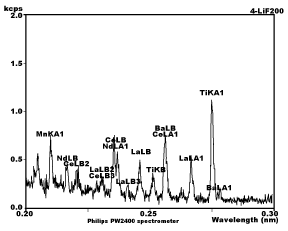
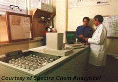

A Low Cost Tester of Glaze Melt Fluidity
A One-speed Lab or Studio Slurry Mixer
A Textbook Cone 6 Matte Glaze With Problems
Adjusting Glaze Expansion by Calculation to Solve Shivering
Alberta Slip, 20 Years of Substitution for Albany Slip
An Overview of Ceramic Stains
Are You in Control of Your Production Process?
Are Your Glazes Food Safe or are They Leachable?
Attack on Glass: Corrosion Attack Mechanisms
Ball Milling Glazes, Bodies, Engobes
Binders for Ceramic Bodies
Bringing Out the Big Guns in Craze Control: MgO (G1215U)
Can We Help You Fix a Specific Problem?
Ceramic Glazes Today
Ceramic Material Nomenclature
Ceramic Tile Clay Body Formulation
Changing Our View of Glazes
Chemistry vs. Matrix Blending to Create Glazes from Native Materials
Concentrate on One Good Glaze
Copper Red Glazes
Crazing and Bacteria: Is There a Hazard?
Crazing in Stoneware Glazes: Treating the Causes, Not the Symptoms
Creating a Non-Glaze Ceramic Slip or Engobe
Creating Your Own Budget Glaze
Crystal Glazes: Understanding the Process and Materials
Deflocculants: A Detailed Overview
Demonstrating Glaze Fit Issues to Students
Diagnosing a Casting Problem at a Sanitaryware Plant
Drying Ceramics Without Cracks
Duplicating Albany Slip
Duplicating AP Green Fireclay
Electric Hobby Kilns: What You Need to Know
Fighting the Glaze Dragon
Firing Clay Test Bars
Firing: What Happens to Ceramic Ware in a Firing Kiln
First You See It Then You Don't: Raku Glaze Stability
Fixing a glaze that does not stay in suspension
Formulating a body using clays native to your area
Formulating a Clear Glaze Compatible with Chrome-Tin Stains
Formulating a Porcelain
Formulating Ash and Native-Material Glazes
G1214M Cone 5-7 20x5 glossy transparent glaze
G1214W Cone 6 transparent glaze
G1214Z Cone 6 matte glaze
G1916M Cone 06-04 transparent glaze
Getting the Glaze Color You Want: Working With Stains
Glaze and Body Pigments and Stains in the Ceramic Tile Industry
Glaze Chemistry Basics - Formula, Analysis, Mole%, Unity
Glaze chemistry using a frit of approximate analysis
Glaze Recipes: Formulate and Make Your Own Instead
Glaze Types, Formulation and Application in the Tile Industry
Having Your Glaze Tested for Toxic Metal Release
High Gloss Glazes
Hire Us for a 3D Printing Project
How a Material Chemical Analysis is Done
How desktop INSIGHT Deals With Unity, LOI and Formula Weight
How to Find and Test Your Own Native Clays
I have always done it this way!
Inkjet Decoration of Ceramic Tiles
Is Your Fired Ware Safe?
Leaching Cone 6 Glaze Case Study
Limit Formulas and Target Formulas
Low Budget Testing of Ceramic Glazes
Make Your Own Ball Mill Stand
Making Glaze Testing Cones
Monoporosa or Single Fired Wall Tiles
Organic Matter in Clays: Detailed Overview
Outdoor Weather Resistant Ceramics
Painting Glazes Rather Than Dipping or Spraying
Particle Size Distribution of Ceramic Powders
Porcelain Tile, Vitrified Tile
Rationalizing Conflicting Opinions About Plasticity
Ravenscrag Slip is Born
Recylcing Scrap Clay
Reducing the Firing Temperature of a Glaze From Cone 10 to 6
Setting up a Clay Testing Program in Your Company or Studio
Simple Physical Testing of Clays
Single Fire Glazing
Soluble Salts in Minerals: Detailed Overview
Some Keys to Dealing With Firing Cracks
Stoneware Casting Body Recipes
Substituting Cornwall Stone
Super-Refined Terra Sigillata
The Chemistry, Physics and Manufacturing of Glaze Frits
The Effect of Glaze Fit on Fired Ware Strength
The Four Levels on Which to View Ceramic Glazes
The Majolica Earthenware Process
The Potter's Prayer
The Right Chemistry for a Cone 6 Magnesia Matte
The Trials of Being the Only Technical Person in the Club
The Whining Stops Here: A Realistic Look at Clay Bodies
Those Unlabelled Bags and Buckets
Tiles and Mosaics for Potters
Toxicity of Firebricks Used in Ovens
Trafficking in Glaze Recipes
Understanding Ceramic Materials
Understanding Ceramic Oxides
Understanding Glaze Slurry Properties
Understanding the Deflocculation Process in Slip Casting
Understanding the Terra Cotta Slip Casting Recipes In North America
Understanding Thermal Expansion in Ceramic Glazes
Unwanted Crystallization in a Cone 6 Glaze
Using Dextrin, Glycerine and CMC Gum together
Volcanic Ash
What Determines a Glaze's Firing Temperature?
What is a Mole, Checking Out the Mole
What is the Glaze Dragon?
Where do I start in understanding glazes?
Why Textbook Glazes Are So Difficult
Working with children
How a Material Chemical Analysis is Done
Description
Michael Banks and Stuart Altmann talk about chemical analyses methods and their advantages and disadvantages. Also information on testing labs you can use.
Article
Conveniences today tend to isolate us from the materials we use. By the same token, the convenience of computers and calculation software isolate us from the hard work done to provide us with the material formula numbers to work with. Most people are not aware of how a lab analyzes a material to determine its chemistry. Following are comments from two respected contributors to the Clayart discussion group on this subject.
Methods Used in Ceramic Raw Materials Chemical Analysis
From: Michael Banks
Here we use X-ray fluorescence spectrometry (XRF) and atomic absorption spectroscopy (AAS) routinely on raw material analyses. AAS is perfectly quantitative in the right hands! :) These methods report elemental compositions. Molar composition of the respective oxides can be spat out by the computer programs controlling both analytical methods.
X-Ray Fluorescence

Sample chart from XRF machine
The most common chemical analytical technique used is X-ray fluorescence spectrometry (XRF) which can determine the proportions and identity of the major oxides of materials of widely differing composition such as silicates, carbonates, sulphates and phosphates from below 0.01% to 100%. The analysis is rapid and non- destructive, but is generally impractical for determining elements lighter than fluorine. Samples containing light elements such as lithium and boron for example, are often analyzed by atomic absorption spectroscopy (AAS) or colorimetric methods.
Major oxide analysis by XRF can be carried out on as little as 0.5 g of material. The sample material can be analyzed as a pressed powder of fused into a glass disk using a suitable flux, such as lithium tetraborate. Using fused samples allows an evenly dispersed solid solution, which enables a wide range of matrix compositions to be accurately, determined through the normalization of both particle size and inter-element (matrix) effects.
XRF works by beaming x-rays onto the sample, which excites some of the electrons orbiting the atomic nuclei (inside the atoms of the elements present), to jump to higher energy orbitals. The empty space in the respective orbital shell is replaced by another electron dropping down from a higher energy level. The electron emits an x-ray photon in order to drop to the lower energy level. This process of atoms emitting secondary x-rays in response to excitation by a primary x-ray source is called x-ray fluorescence. The secondary x-ray photons are emitted by the atoms of the elements in the sample in characteristic discrete frequency peaks, their fingerprint line spectra.

An XRF machine in use
Sample holders are arrayed in the left foreground
The elements in the sample can therefore be identified by their spectral wavelengths for qualitative analysis and the intensity of the emitted spectral lines enables quantitative analysis. This is accomplished by directing the secondary (fluorescence) radiation from the sample into a narrow beam by slit collimator and onto a crystal plate. The crystal is commonly lithium fluoride. The various wavelengths in the beam are diffracted by the crystal lattice atoms in the plate off at various angles proportional to their frequency (analogous to white light passing through a prism). A radiation detector is rotated by degrees around an accurate track (goniometer) and the individual frequencies and their intensities thus measured. The on-board computer then reduces this data to elemental or oxide concentration figures.
Atomic Absorption Spectrometry:
For this method, the pulverized sample is usually digested (dissolved into solution) by mixtures of strong acids, normally perchloric and hydrofluoric acid. AAS works by beaming light of a set frequency through a gas flame (acetylene-oxygen, or acetylene-nitrous oxide) into which an aqueous solution of the sample has been vaporized. In this case (similarly to XRF), the orbital electrons in the flame plasma, absorb certain quanta of light from the beam in order to jump up to higher energy levels. But in the reverse to XRF, a detector opposite the light source measures the intensity of the loss of a particular frequency and the elemental (or oxide composition) computed in relation to a set of known aqueous standards run through the AAS alternately
with samples.
Elements present in the atmosphere of the sun and stars also produce absorption spectra. Numerous dark bands in the spectrum of light emitted by these objects are characteristic of the elements present. The dark bands are specific frequency photons that have been absorbed by the elements in the suns (or stars) atmosphere. Spectral analysis of sunlight is virtually long-distance AAS.
Colorimetric Methods:
Only a few elements are not easily determined by XRF or AAS. Probably the only one of consequence commonly present in ceramic materials is boron. This can be determined by colorimetry. This entails preparing an aqueous solution of the sample, adding a reagent which produces a strong colour in the presence of boron ions and reading the intensity of this colour in relation to standards of known boron concentration. The colour intensity comparisons are normally read by machine but can also be done by eye (as in the old days). Hopefully by someone not colour- blind!
ICP, NAA, etc:
Those few elements or materials not analyzed by these methods, can be determined by other more specialized techniques such as inductively coupled plasma spectroscopy (ICP) - similar to high temperature AAS, neutron activation analysis (NAA), or wet chemical analysis other than colorimetry. Individual microscopic minerals can be analyzed, in-situ in a rock, by electron microprobe, or x-ray microprobe, which is virtually micro-XRF.
Another Viewpoint
From: Stuart Altmann <salt@Princeton.EDU>
The chemical analysis is done in terms of mass (so-called "weight," though not really that). But thanks to Avogadro's number, we can readily convert from mass to the number of atoms or molecules. The number of molecules in one gram-mole of a substance, defined as the molecular weight in grams, is 6.022 times 10 to the 23rd power--which is Avogadro's number. For example, the molecular weight of oxygen is 32, so one gram-mole of oxygen has a mass of 32 g and contains 6.022 x 10^23 molecules. Isn't that conversion amazing?
Many techniques are used for analysis of chemical elements, depending on the level of accuracy required, the equipment on hand, and so forth. For a good description of available techniques, see the Encyclopedia Brittanica's Macropedia, under Analysis and Measurement. An ordinary, relatively inexpensive analysis provides values good to two (or three) significant figures, and that's probably all the accuracy you can expect --or need-- for most pottery work.
The most accurate apparatus now being used for routine chemical analysis is the high-resolution mass spectroscope, which can resolve a difference as small as one part in 10,000,000. With that kind of precision, you can tell the masses not just of chemical elements but of the various isotopes of an element, e.g. carbon-12 vs. carbon-14, or hydrogen vs. deuterium vs. tritium.
A unity formula does not indicate the number of molecules or parts of molecules. It indicates the relative amounts (proportions) of the listed oxides. This common confusion would be avoided if unity formulas were expressed as percentages instead of proportions--but that would probably lead to a different confusion, of thinking that these are the percentages of oxides in your recipe.
Here is a table showing what the lab provides. A number of pottery supply catalogs include them, and many of the companies that produce them post them on their web pages. Here, for example, is Feldspar Corporation's posted analysis of their G200 feldspar. Note that the analysis is given in terms of oxides of the various elements; that is the form commonly used in glaze and clay calculations.
Typical Analysis
SiO2 66.3% Al2O3 18.5% Fe2O3 0.082% CaO 0.81% MgO TRACE Na2O 3.04% K2O 10.75% LOI 0.16%
I guess the only thing here that requires explanation is LOI, loss on ignition. This includes volatile material, such as the oxides of C, S, H, and N, some of which is from organic material. An analysis of sulfur content, which is important (negatively) to the potter, would usually have to be requested separately.
Depending on the equipment used in the chem lab and what is requested, the analysis may be given for the elements themselves, not their oxides. For example, analysis of water from a swamp in Amboseli National Park, Kenya, gave me the following:
Element Result (mcg/ml) Detection Limit Na 12400 mcg/ml 10 Fe 18.7 0.03 Mg 73.1 73.8 (etc., for 32 elements)
The more heterogeneous the material, the larger the sample size needed to achieve any given degree of accuracy in estimating mean composition. Getting representative samples is fraught with potential biases; much attention has been directed to methods for minimizing them. Do mining companies make use of modern sampling methods? Ah, thereby hangs a tale!
Testing Labs
For a lab near you search for "chemical analysis service for ceramic oxides" on a search engine or visit the Thomas Register at http://www.thomasregister.com and look for labs that use the type of equipment listed here. Digitalfire also maintains a list of labs at https://digitalfire.com/services/database.php?list=labs
Related Information
Links
| URLs |
https://digitalfire.com/services/database.php?list=labs
Laboratories who can can do a chemical analysis on a material |
 PayPal | No tracking, No ads, No paywall, No transient content! Just organized, concise information constantly updated and improved. Was this helpful? Consider supporting me. |
| By Tony Hansen Follow me on        |  |
Got a Question?
Buy me a coffee and we can talk 

https://digitalfire.com, All Rights Reserved
Privacy Policy